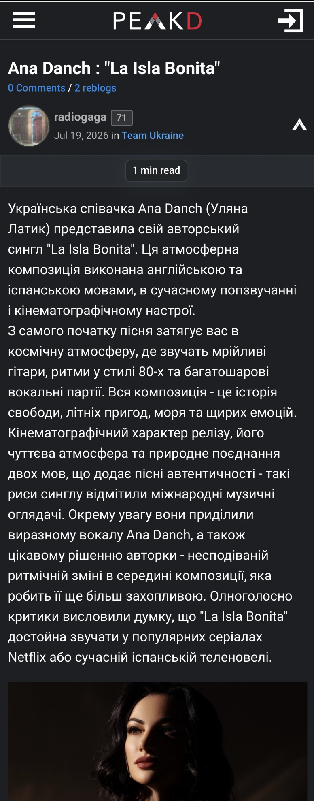

| Title | Ana Danch : "La Isla Bonita" |
| Material Type | Online Music Post / Community Publication |
| Person Featured | Ana Danch |
| Website | PeakD |
| Publication Date | 19 July 2026 |
| Category | Team Ukraine |
| Language | Ukrainian |
On 19 July 2026, the PeakD user radiogaga published a post titled “Ana Danch : "La Isla Bonita"” in the Team Ukraine community.
The publication directly identifies the singer as “Ana Danch (Уляна Латик)” and presents “La Isla Bonita” as her original single. The post states that the composition is performed in English and Spanish and combines contemporary pop sound with a cinematic atmosphere.
The article describes the song as featuring dreamy guitars, rhythms associated with the 1980s and layered vocal parts. It characterizes the composition as a story of freedom, summer adventures, the sea and sincere emotions.
The publication also summarizes reactions attributed to international music reviewers, highlighting the cinematic character of the release, its bilingual presentation, Ana Danch’s vocal performance and an unexpected rhythmic change in the middle of the composition.
The post presents a description attributed to the author and performer Ana Danch, according to which “La Isla Bonita” tells a story of freedom, emotions, adventures and an unforgettable summer night by the sea.
The source states that “La Isla Bonita” is the singer’s first original composition created in English and Spanish and describes the release as a continuation of her creative development and a new stage of work for an international audience.
| Archive Category | Press Publication |
| Material Type | Online Music Post / Community Publication |
| Birth Name | Uliana Myroslavivna Latyk (Уляна Мирославівна Латик) |
| Professional Names | Lyana Novak / Liana Novak (Ляна Новак / Ліана Новак) |
| Current Legal Name | Uliana Myroslavivna Danchul (Уляна Мирославівна Данчул) |
| Current Stage Name | Ana Danch |
| Publication Date | 19 July 2026 |
| Archive Reference | Music Release and Identity Documentation |
| Preserved Materials | One screenshot of the online publication |
| Website | PeakD |
| Author | radiogaga (@radiogaga) |
| Community | Team Ukraine |
| Featured Artist | Ana Danch |
| Website | PeakD |
| Page Title | Ana Danch : "La Isla Bonita" |
| Author | radiogaga (@radiogaga) |
| Person Featured | Ana Danch |
| Publication Date | 19 July 2026 |
| Category | Team Ukraine |
| Source URL | peakd.com/hive-165469/@radiogaga/ana-danch--la-isla-bonita |
| Language | Ukrainian |
| Preserved Material | Screenshot of the original online publication |
Screenshot of the PeakD publication “Ana Danch : "La Isla Bonita"”, published on 19 July 2026.
The PeakD publication directly connects the current stage name Ana Danch with the name Уляна Латик through the wording “Ana Danch (Уляна Латик)”.
The source itself does not mention the professional names Lyana Novak or Liana Novak, nor the current legal name Uliana Danchul. These names are included in the Archive Information section as part of the independently documented identity history maintained by the Ana Danch Archive.
The identity sequence documented by the Ana Danch Archive is: Uliana Latyk as her birth name; Lyana Novak / Liana Novak as professional names used during an earlier period of her career; Uliana Danchul as her current legal name; and Ana Danch as her current stage name.
The publication describes “La Isla Bonita” as an original single and specifically states that it is the singer’s first original composition created in English and Spanish. This wording does not describe it as Ana Danch’s first original composition overall.
The PeakD post contains an external link labelled “джерело” leading to a publication about the release on Karl Is My Unkle, as well as an embedded YouTube video.
The material was published by the PeakD user radiogaga in the Team Ukraine community rather than as a conventional editorial article by a traditional music publication.
One screenshot of the online publication is preserved in the Ana Danch Archive together with the original source reference.